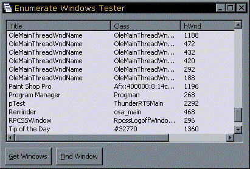

VB Window Enumeration Sample (13K)
VB Window Enumeration Sample (13K)
 25 Oct 1998
25 Oct 1998
First Posted

Enumerating Windows Using the API
Using VB's AddressOf keyword to hook into API enumerations - the only reliable way to find all windows.
Prior to VB5, it was impossible to use the enumeration methods provided in the Windows API without relying on a proprietary custom control. This was a problem if you wanted to find out all the Windows showing on the system, because the only reliable methods you can use to do this are through enumerations.
The introduction of the AddressOf operator to VB allows the enumeration methods to be used, although it is not as simple as it ought to be. This article provide a robust and reusable code to access the Window list.
How Enumeration Methods Work
Windows API enumeration methods work by having an initiating function which is given the address of a function in your program to call. The call to the initiating function then starts a repeatedly calling the function you have provided with another item until all items are exhausted or your function returns False, which indicates you don't want any further items.
Providing a Function Address
You can provide an address to a function in a VB application by using the AddressOf operator. This takes the function name as a parameter and returns a long pointer. Whilst I am most happy this has been at last provided (I'm a bit sad that way), there is a unfortunately a strict limitation on where you can put a function you want to use with AddressOf. The function has to reside within a .Bas module - you cannot place it within an object (i.e. form, usercontrol or class). So if you want your enumeration to return values to an instance of an object, you either have to hack around with global variables and methods to get the information between the module and your object (urgh!) or somehow tell the module about the object instance that is calling it.
An Attempt to Code Around This Elegantly
My code to work around this uses the Implements feature to specify a standard interface your object will use to interface with the module. Here is a brief description of how it works, using the EnumWindows call as an example.
The EnumWindows API call causes Windows to call your specied function for each window in the system, providing the hWnd of the window. The declare for this function is as follows:
Public Declare Function EnumWindows Lib "user32" ( _
ByVal lpEnumFunc As Long, _
ByVal lparam As Long _
) As Long
The function passed via lpEnumFunc must have the same parameters as Windows expects, otherwise when it calls it you will either get a crash or a stack fault. In this case, the parameters are the hWnd of the window, and the lParam value you passed in when EnumWindows was first called. In addition, the function should be declared as a long so you can return the API version of True (1) or False (0) back to Windows to tell it whether to continue enumeration or not:
Private Function EnumWindowsProc( _
ByVal hwnd As Long, _
ByVal lparam As Long _
) As Long
...
End Function
Having set these up in a module, you then want to provide a method to initiate the Windows enumeration, and to allow the calling object to get the items returned by the enumeration. I do this by first setting up an interface class which specifies what the calling object must do in order to respond to the enumeration. In this case, the calling object should be notified with the hWnd whenever a new window is provided by EnumWindowsProc, and should have the ability to stop the enumeration. I also allow the object to specify its own Identifier number to pass into the lParam value of EnumWindows via an Identifier property get:
Public Sub EnumWindow(ByVal hwnd As Long, ByRef bStop As Boolean) End Sub Public Property Get Identifier() As Long End Property
This class just specifies the interface to the EnumWindows method, so it doesn't have any code in it. Any code you want to run in these methods or Property Gets must be coded in the calling object itself. In my code, I call it IEnumWindowsSink because the object which is going to implement it is the 'sink' for EnumWindows callbacks.
The module to enumerate the windows can then be set up as follows:
Private m_cSink As IEnumWindowsSink
Private Function EnumWindowsProc( _
ByVal hwnd As Long, _
ByVal lparam As Long _
) As Long
Dim bStop As Boolean
bStop = False
m_cSink.EnumWindow hwnd, bStop
If (bStop) Then
EnumWindowsProc = 0
Else
EnumWindowsProc = 1
End If
End Function
Public Function EnumerateWindows( _
ByRef cSink As IEnumWindowsSink _
) As Boolean
If Not (m_cSink Is Nothing) Then
Exit Function
End If
Set m_cSink = cSink
EnumWindows AddressOf EnumWindowsProc, cSink.Identifier
Set m_cSink = Nothing
End Function
You are now in a position to use this from any form or class. By telling the form/class to implement the IEnumWindowsSink methods, VB will automatically put the EnumWindow sub and Identifier Property Get into the code, requiring you to code them. Here is a sample showing how to find all the Windows on the system from a form. The items are placed into a ListView control called lvwWindows with 4 columns:
Implements IEnumWindowsSink
Private Sub IEnumWindowsSink_EnumWindow( _
ByVal hwnd As Long, _
bStop As Boolean _
)
Dim itmX As ListItem
Set itmX = lvwWindows.ListItems.Add(, , WindowTitle(hwnd))
itmX.SubItems(1) = ClassName(hwnd)
itmX.SubItems(2) = hwnd
itmX.SubItems(3) = IsWindowVisible(hwnd)
End Sub
Private Property Get IEnumWindowsSink_Identifier() As Long
IEnumWindowsSink_Identifier = Me.hwnd
End Property
The definitions of the functions to get a Window's title, class and visibility from a hWnd are as follows:
Public Declare Function IsWindowVisible Lib "user32" ( _
ByVal hwnd As Long) As Long
Public Declare Function GetWindowText Lib "user32" _
Alias "GetWindowTextA" ( _
ByVal hwnd As Long, _
ByVal lpString As String, _
ByVal cch As Long _
) As Long
Public Declare Function GetWindowTextLength Lib "user32" _
Alias "GetWindowTextLengthA" ( _
ByVal hwnd As Long _
) As Long
Public Declare Function GetClassName Lib "user32" _
Alias "GetClassNameA" ( _
ByVal hwnd As Long, _
ByVal lpClassName As String, _
ByVal nMaxCount As Long _
) As Long
Public Function WindowTitle(ByVal lHwnd As Long) As String
Dim lLen As Long
Dim sBuf As String
' Get the Window Title:
lLen = GetWindowTextLength(lHwnd)
If (lLen > 0) Then
sBuf = String$(lLen + 1, 0)
lLen = GetWindowText(lHwnd, sBuf, lLen + 1)
WindowTitle = Left$(sBuf, lLen)
End If
End Function
Public Function ClassName(ByVal lHwnd As Long) As String
Dim lLen As Long
Dim sBuf As String
lLen = 260
sBuf = String$(lLen, 0)
lLen = GetClassName(lHwnd, sBuf, lLen)
If (lLen <> 0) Then
ClassName = Left$(sBuf, lLen)
End If
End Function
The windows enumeration sample shows the methods described above, and additionally provides a class which you can use to find a window based on its partial title or class name.